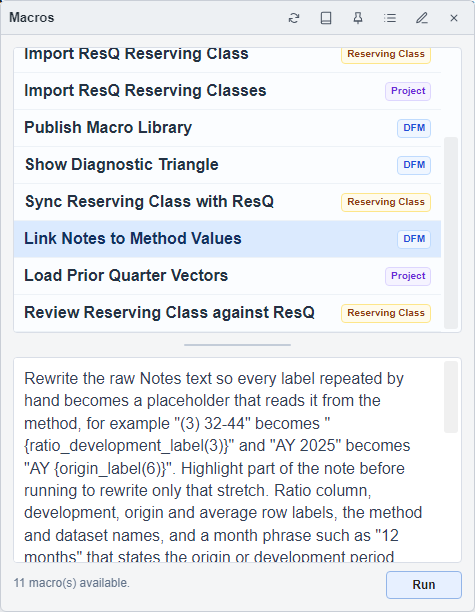

Macros and Tasks
Run a focused action and inspect its result
Use a macro's description and scope to choose the right action for the active project, segment, or method.
Select a Macro
- Open the demo Project Page and select Commercial Auto → All States → CH02 → Comprehensive.
- If the macro works on a DFM, open the intended method and click its window to make it active.
- Choose Macro in the main menu to open the Macros panel.
- Select a macro and read its description and scope before choosing Run.

Follow the Run to Completion
- Choose Run once and read any selection, review, or confirmation window the macro opens.
- Follow the progress and final message. A completed run can still report individual items that need attention.
- For a method-editing macro, inspect the changed method and its Notes, then save the intended result.
- For a macro that publishes datasets, return to the Project Page and use Refresh Table if the inventory has not yet updated.
The description determines whether a macro reviews data, edits the active method, or writes project data directly. Do not assume every macro waits for a later manual save.
Find or Inspect a Macro
Use Open shared macro library in the panel header to browse available macros. Use Refresh macros after the local list changes. Edit macro opens the selected source in Arcode.
Use the pin control to keep the Macros panel above the work area while you compare the description with the active method.
Read Task Designer Progress
Task-based macros can open Task Designer to show their steps. Read Task Name, Duration, Result, and the output message for each row.
- Wait for running rows to reach a final result.
- Click a row, or focus it and press Enter, to open its details and read the full message.
- Resolve failed or skipped items before treating the entire task as complete.
For ResQ-specific actions, continue to ResQ Import and Review.